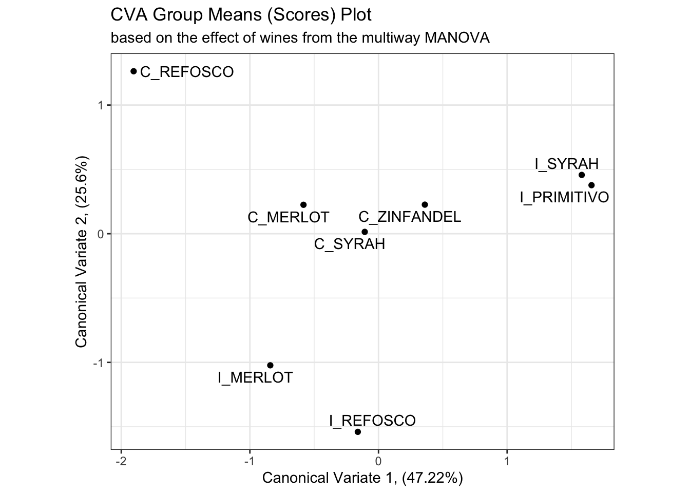
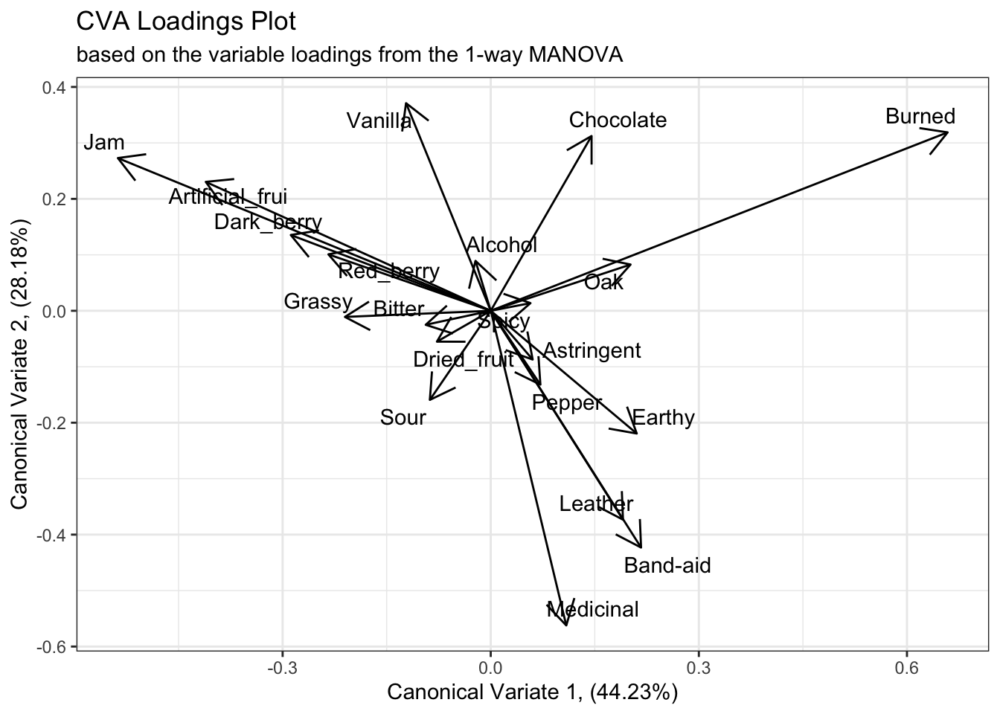
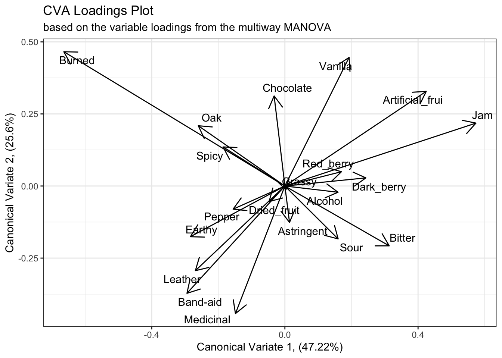
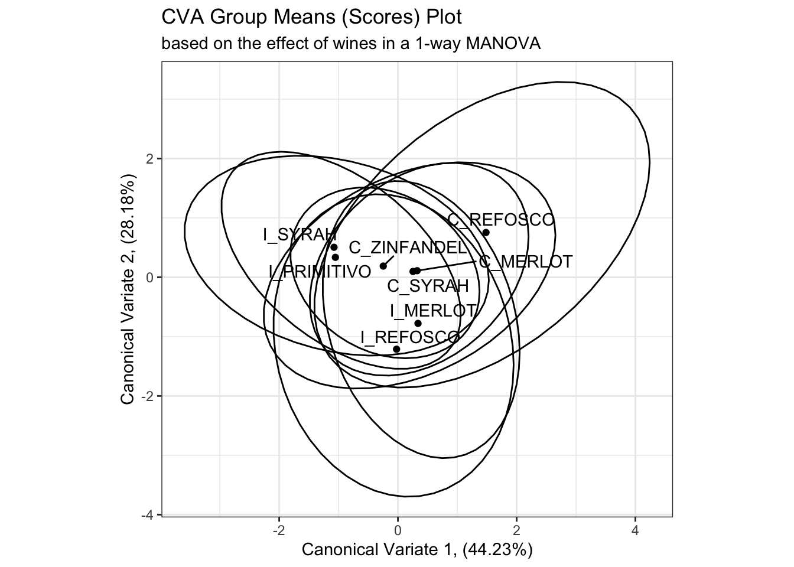
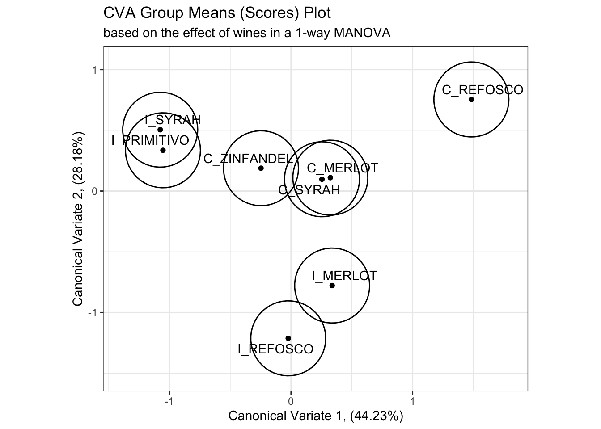
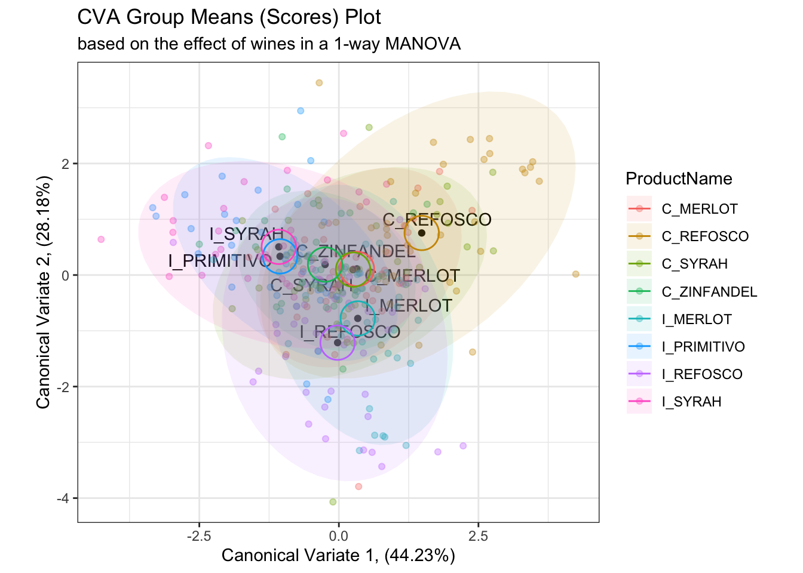
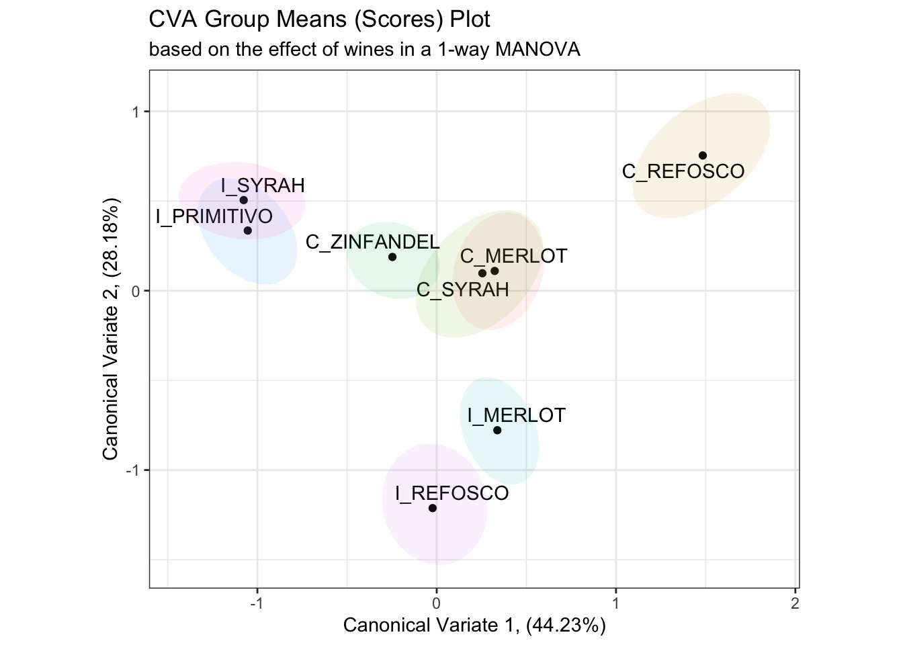

Chapter 5 Canonical Variate Analysis
In the analysis of sensory data, many of the steps are concerned with “dimensionality reduction”: finding optimal, low-dimensional representations of sensory data, which is typically highly multivariate. The definition of “optimal” will vary, depending on the particular method chosen. In this section, we’re going to focus on Canonical Variate Analysis (CVA), which HGH tends to prefer for sensory data over the more common Principal Components Analysis (we’ll get to that, too!).
First, we’ll start with loading our data and the relevant libraries. Note that here we will be loading a new library: candisc. This is the library that HGH uses in the original R Opus, and as far as I can tell it remains the best way to conduct CVA. A good alternative would be Beaton & Abdi’s MExPosition, but that package appears to be defunct as of the time of this writing (late 2022), and uses a closely related approach called Barycentric Discriminant Analysis instead of the typical CVA.
# Attempted fix for the rgl error documented here: https://stackoverflow.com/a/66127391/2554330
#options(rgl.useNULL = TRUE)
library(rgl)
library(tidyverse)
library(candisc) # this is new
library(here)
descriptive_data <- read_csv(here("data/torriDAFinal.csv")) %>%
mutate_at(.vars = vars(1:3), ~as.factor(.))5.1 What is CVA?
Canonical Variate Analysis is also often called (Linear) Discriminant Analysis. It is closely related to Canonical Correlation Analysis, and is even sometimes called Fisher’s Linear Descriminant Analysis (phew). The basic goal of this analysis is to find linear combinations of variables that best separate groups of observations. In this way, we could say that CVA/LDA is a “supervised” learning method, in that we need to provide a vector of group IDs for the observations (rows) in order to allow the algorithm to find a combinaton of variables to separate them.
CVA builds on the same matrix-math calculations that underly MANOVA, and so, according to Rencher CITE Rencher 2012, we can think of CVA as the multivariate equivalent of univariate post-hoc testing, like Tukey’s HSD. In post-hoc testing, we calculate various intervals around group means in order to see if we can separate observations from multiple groups according to their group IDs. We do much the same with CVA, except that we use group mean vectors.
Recall that we had a significant 3-way MANOVA for our data:
manova_res <-
manova(as.matrix(descriptive_data[, 4:23]) ~ (ProductName + NJ + NR)^2,
data = descriptive_data)
summary(manova_res, test = "W")## Df Wilks approx F num Df den Df Pr(>F)
## ProductName 7 0.04243 4.7575 140 1093.6 < 2.2e-16 ***
## NJ 13 0.00001 12.5493 260 1819.7 < 2.2e-16 ***
## NR 2 0.64784 1.9756 40 326.0 0.0007056 ***
## ProductName:NJ 91 0.00000 1.7583 1820 3331.1 < 2.2e-16 ***
## ProductName:NR 14 0.22673 0.9414 280 1916.9 0.7387371
## NJ:NR 26 0.02215 1.3926 520 2672.6 1.873e-07 ***
## Residuals 182
## ---
## Signif. codes: 0 '***' 0.001 '**' 0.01 '*' 0.05 '.' 0.1 ' ' 1We are interested in building on our intuition about Mahalanobis distances, etc, and seeing if we can use, in our case, ProductName to separate our observations in multidimensional descriptor space. Specifically, we have a 20-dimensional data set:
## Rows: 336
## Columns: 23
## $ NJ <fct> 1331, 1331, 1331, 1331, 1331, 1331, 1331, 1331, 1400, …
## $ ProductName <fct> C_MERLOT, C_SYRAH, C_ZINFANDEL, C_REFOSCO, I_MERLOT, I…
## $ NR <fct> 7, 7, 7, 7, 7, 7, 7, 7, 7, 7, 7, 7, 7, 7, 7, 7, 7, 7, …
## $ Red_berry <dbl> 5.1, 5.6, 4.9, 5.0, 3.3, 5.7, 2.9, 3.2, 0.1, 1.6, 4.5,…
## $ Dark_berry <dbl> 5.8, 1.9, 2.6, 1.9, 7.2, 3.6, 5.1, 6.0, 0.1, 0.7, 2.9,…
## $ Jam <dbl> 2.1, 3.9, 1.4, 7.8, 0.5, 8.7, 8.7, 4.0, 0.2, 0.0, 0.3,…
## $ Dried_fruit <dbl> 4.7, 1.2, 5.9, 0.6, 5.8, 1.9, 0.4, 0.7, 2.9, 6.4, 2.4,…
## $ Artificial_frui <dbl> 1.0, 7.9, 0.8, 6.6, 0.7, 7.4, 6.2, 4.1, 0.1, 0.1, 0.1,…
## $ Chocolate <dbl> 2.9, 1.0, 2.0, 6.4, 2.1, 3.3, 3.4, 3.6, 0.2, 1.0, 0.2,…
## $ Vanilla <dbl> 5.0, 8.3, 2.7, 5.5, 1.3, 6.9, 8.1, 4.8, 2.0, 0.8, 1.9,…
## $ Oak <dbl> 5.0, 2.3, 5.6, 3.6, 2.1, 1.5, 1.8, 2.6, 3.0, 5.4, 6.1,…
## $ Burned <dbl> 1.4, 1.8, 1.9, 3.2, 5.6, 0.2, 0.4, 4.7, 7.5, 5.1, 0.3,…
## $ Leather <dbl> 2.3, 3.5, 4.3, 0.3, 6.5, 1.5, 4.1, 6.5, 0.7, 0.8, 0.2,…
## $ Earthy <dbl> 0.6, 1.0, 0.6, 0.2, 4.7, 0.3, 0.5, 1.9, 0.7, 3.0, 1.3,…
## $ Spicy <dbl> 3.2, 0.7, 1.4, 2.9, 0.7, 3.1, 0.7, 1.4, 0.3, 3.2, 3.1,…
## $ Pepper <dbl> 5.4, 3.0, 4.1, 0.9, 2.8, 1.6, 3.6, 4.5, 0.1, 2.0, 0.9,…
## $ Grassy <dbl> 2.1, 0.6, 3.6, 1.8, 3.8, 0.9, 2.3, 0.8, 0.1, 1.3, 0.4,…
## $ Medicinal <dbl> 0.4, 2.2, 1.7, 0.2, 2.6, 0.5, 0.2, 3.8, 0.1, 2.1, 0.1,…
## $ `Band-aid` <dbl> 0.4, 0.4, 0.1, 0.2, 5.1, 1.2, 0.2, 6.2, 0.1, 1.1, 0.1,…
## $ Sour <dbl> 5.0, 9.7, 7.8, 8.3, 7.6, 7.2, 5.9, 6.3, 5.7, 6.4, 5.4,…
## $ Bitter <dbl> 5.9, 5.2, 3.5, 3.0, 1.9, 9.8, 2.9, 0.2, 0.6, 2.9, 0.1,…
## $ Alcohol <dbl> 9.0, 7.2, 4.7, 8.9, 2.8, 8.7, 1.6, 7.0, 1.6, 5.4, 4.9,…
## $ Astringent <dbl> 8.7, 8.3, 5.0, 7.8, 5.9, 8.0, 2.6, 4.2, 5.5, 5.1, 5.9,…We can’t see in 20 dimensions! So how does CVA help us not only separate our observations, but visualize them? It turns out, without digging too far into the matrix algebra, that the following are properties of CVA:
- For \(k\) groups and \(p\) variables, CVA will find \(min(k-1, p-1)\) linear functions of the variables that best separate the groups.
- The solution turns out to be an eigendecomposition of the MANOVA calculations.
- Because it is an eigendecomposition, we can rank the functions by their associated eigenvalues, and say that the function associated with the largest eigenvalue best separates the groups.
- We can treat the functions, which map observation vectors to single values using a linear combination of variables, as cartesian axes to plot variables against each other.
- NB: In fact, unlike PCA and some other approaches, CVA does not in general produce orthogonal linear functions, and so we are technically distorting the space a bit by plotting canonical variate function 1 as the x-axis, canonical variate function 2 as the y-axis, and so on, but in practice the distortion is reported to be minor Heymann and Ebeler (2017).
OK, back outside of the math digression, let me resummarize: we can use CVA to find combinations of the original variables that best separate our observations into their assigned group IDs. Because this is often the exact task we want to accomplish with a Descriptive Analysis, CVA is a great tool to use to describe variation in samples’ descriptive profiles according to the important categorical variable(s) that identify them.
5.2 Application of CVA
In the original R Opus, HGH recommends using CVA only on one-way MANOVA, and we ran a 3-way MANOVA. This makes sense if you think in analogy to univariate post-hoc tests: these are sometimes called “marginal means” tests because we marginalize across the other factors to collapse our data to only a single categorical predictor in which we’re interested. However, we are able to run post-hoc tests on multi-way ANOVA, and we can do the same thing in MANOVA/CVA land. Let’s compare the approach for the two.
First, let’s run a one-way MANOVA with just ProductName as the predictor and then send it off to CVA (using the candisc() function, whose name comes from “canonical discriminant analysis”):
manova_res_oneway <-
manova(as.matrix(descriptive_data[, 4:23]) ~ ProductName,
data = descriptive_data)
cva_res_oneway <- candisc(manova_res_oneway)
cva_res_oneway##
## Canonical Discriminant Analysis for ProductName:
##
## CanRsq Eigenvalue Difference Percent Cumulative
## 1 0.381405 0.616566 0.22367 44.2257 44.226
## 2 0.282071 0.392895 0.22367 28.1820 72.408
## 3 0.121339 0.138095 0.22367 9.9054 82.313
## 4 0.109005 0.122340 0.22367 8.7754 91.089
## 5 0.059767 0.063566 0.22367 4.5595 95.648
## 6 0.041480 0.043275 0.22367 3.1041 98.752
## 7 0.017100 0.017397 0.22367 1.2479 100.000
##
## Test of H0: The canonical correlations in the
## current row and all that follow are zero
##
## LR test stat approx F numDF denDF Pr(> F)
## 1 0.30799 2.85884 140 2063.54 < 2.2e-16 ***
## 2 0.49788 2.02435 114 1791.99 3.834e-09 ***
## 3 0.69349 1.31764 90 1513.26 0.0276 *
## 4 0.78926 1.12136 68 1226.69 0.2378
## 5 0.88582 0.80761 48 931.73 0.8224
## 6 0.94213 0.63333 30 628.00 0.9372
## 7 0.98290 0.39144 14 315.00 0.9769
## ---
## Signif. codes: 0 '***' 0.001 '**' 0.01 '*' 0.05 '.' 0.1 ' ' 1The likelihood-ratio tests given in the summary from the cva_res_oneway object gives tests derived from the F-statistic approximation to the Wilk’s \(\Lambda\) results from the original MANOVA (another reason we prefer to use that statistic).
However, compare these results to those from our original MANOVA:
##
## Canonical Discriminant Analysis for ProductName:
##
## CanRsq Eigenvalue Difference Percent Cumulative
## 1 0.699341 2.326032 1.0647 47.21757 47.218
## 2 0.557787 1.261351 1.0647 25.60496 72.823
## 3 0.340601 0.516533 1.0647 10.48543 83.308
## 4 0.281808 0.392386 1.0647 7.96528 91.273
## 5 0.191329 0.236597 1.0647 4.80282 96.076
## 6 0.128956 0.148048 1.0647 3.00531 99.081
## 7 0.043294 0.045254 1.0647 0.91863 100.000
##
## Test of H0: The canonical correlations in the
## current row and all that follow are zero
##
## LR test stat approx F numDF denDF Pr(> F)
## 1 0.04243 8.9770 140 2063.54 < 2.2e-16 ***
## 2 0.14113 6.3682 114 1791.99 < 2.2e-16 ***
## 3 0.31914 4.4633 90 1513.26 < 2.2e-16 ***
## 4 0.48398 3.6644 68 1226.69 < 2.2e-16 ***
## 5 0.67389 2.7546 48 931.73 5.162e-09 ***
## 6 0.83333 1.9980 30 628.00 0.001389 **
## 7 0.95671 1.0182 14 315.00 0.434537
## ---
## Signif. codes: 0 '***' 0.001 '**' 0.01 '*' 0.05 '.' 0.1 ' ' 1While the exact numbers are different (and we see more significant dimensions according to the LR test), the actual amount of variation explained by the canonical variates is very close. Furthermore, we can visualize the results to contrast them.
5.2.1 Basic visualization of CVA
We’ll start by examining the placement of the group means in the resultant “CVA-space”, which is just the scores (linear combinations of original variables) for the first and second canonical variate functions for each product mean vector.
# Here is the plot of canonical variates 1 and 2 from the one-way approach
scores_p_1 <-
cva_res_oneway$means %>%
as_tibble(rownames = "product") %>%
ggplot(aes(x = Can1, y = Can2)) +
geom_point() +
ggrepel::geom_text_repel(aes(label = product)) +
theme_bw() +
labs(x = paste0("Canonical Variate 1, (", round(cva_res_oneway$pct[1], 2), "%)"),
y = paste0("Canonical Variate 2, (", round(cva_res_oneway$pct[2], 2), "%)"),
title = "CVA Group Means (Scores) Plot",
subtitle = "based on the effect of wines in a 1-way MANOVA") +
coord_equal()
scores_p_1# And here is the plot of the canonical variates 1 and 2 from the multiway MANOVA
scores_p_2 <-
cva_res$means %>%
as_tibble(rownames = "product") %>%
ggplot(aes(x = Can1, y = Can2)) +
geom_point() +
ggrepel::geom_text_repel(aes(label = product)) +
theme_bw() +
labs(x = paste0("Canonical Variate 1, (", round(cva_res$pct[1], 2), "%)"),
y = paste0("Canonical Variate 2, (", round(cva_res$pct[2], 2), "%)"),
title = "CVA Group Means (Scores) Plot",
subtitle = "based on the effect of wines from the multiway MANOVA") +
coord_equal()
scores_p_2
Besides a reversal of the x-axis (a trivial reflection which does not change meaning), the product mean separation appears to be identical in these two solutions, and the proportion of explained variation remains almost identical. We’ll keep up this comparison as we investigate the rest of the solution.
Next, we want to examine how the original variables are related to the resulting “CVA-space”. This is usually visualized as a vector plot, so we’re going to follow convention. This will make our ggplot2 calls a little messsier, but I think it is worth it.
In the candisc() output, the $coeffs.raw list holds the linear combinations of variables that contribute to each dimension:
## # A tibble: 20 × 8
## descriptor Can1 Can2 Can3 Can4 Can5 Can6 Can7
## <chr> <dbl> <dbl> <dbl> <dbl> <dbl> <dbl> <dbl>
## 1 Red_berry 0.01 0.03 -0.04 -0.1 -0.21 -0.06 -0.18
## 2 Dark_berry -0.12 0.02 0.16 0.05 0.23 -0.03 0.1
## 3 Jam -0.22 0.09 -0.05 -0.11 -0.15 -0.03 0.11
## 4 Dried_fruit -0.06 0.03 -0.1 0.2 0.17 0.03 -0.14
## 5 Artificial_frui -0.18 0.04 0.28 -0.02 0.09 -0.1 0.18
## 6 Chocolate 0.3 0.26 0.1 -0.11 -0.1 0.13 0.07
## 7 Vanilla -0.03 0.05 -0.18 -0.07 -0.08 -0.05 -0.17
## 8 Oak 0.04 0.1 -0.26 0.15 0 -0.25 0.2
## 9 Burned 0.32 0.26 0.24 -0.06 0 -0.05 0.05
## 10 Leather -0.02 -0.22 -0.02 -0.12 0.11 -0.32 -0.07
## 11 Earthy 0.1 0 -0.12 -0.17 -0.01 0.47 0.07
## 12 Spicy 0.02 0.09 0.07 0.06 0.1 -0.22 -0.3
## 13 Pepper 0.08 -0.09 -0.17 0.27 -0.11 0.12 0.23
## 14 Grassy -0.31 0 0.16 0.18 -0.09 0.22 -0.16
## 15 Medicinal 0.02 -0.29 -0.02 -0.25 -0.02 0.04 0.15
## 16 Band-aid 0.07 -0.13 0.22 0.05 -0.1 -0.09 -0.16
## 17 Sour -0.08 -0.07 0.11 -0.05 -0.06 -0.04 0.14
## 18 Bitter 0.02 0.13 0.06 0.06 0.09 -0.04 -0.23
## 19 Alcohol 0.02 0.06 -0.22 -0.28 0.23 0.16 -0.1
## 20 Astringent 0.1 -0.13 0.11 0.16 -0.06 -0.02 0.02This tell us that to get an observation’s (call it \(i\)) score on Canonical Variate 1, we’d take the following linear sum: \(Can1_i = -0.01*Red\_berry_i + -0.12*Dark\_berry_i + ... + -0.22*Astringent_i\). We do this for every observation to find their score in the space.
To visualize this, rather than plotting the raw coefficients, we typically plot the correlations between the raw coefficients and the original variables, which are stored in the $structure list. We can consider the “loadings” or “structure coefficients” themselves as coordinates in the same CVA space, which gives us an idea of how each variable contributes to the dimensions.
cva_res_oneway$structure %>%
as_tibble(rownames = "descriptor") %>%
ggplot(aes(x = Can1, y = Can2)) +
geom_segment(aes(xend = 0, yend = 0),
arrow = arrow(length = unit(0.2, units = "in"), ends = "first")) +
ggrepel::geom_text_repel(aes(label = descriptor)) +
labs(x = paste0("Canonical Variate 1, (", round(cva_res_oneway$pct[1], 2), "%)"),
y = paste0("Canonical Variate 2, (", round(cva_res_oneway$pct[2], 2), "%)"),
title = "CVA Loadings Plot",
subtitle = "based on the variable loadings from the 1-way MANOVA") +
theme_bw()
We can see from this plot that the first canonical variate has large positive contributions from “Burned” characteristics and smaller contributions from “Oak”, and strong negative contributions from fruit-related terms like “Jam”, “Artificial_frui [sic]”, etc. The second canonical variate has large positive contributions from both “Vanilla” and “Chocolate”, and negative contributions from flaw/complex terms like “Medicinal”, “Band-aid”, etc.
If we examine the results from the multiway MANOVA we’ll see similar results, with the exception of a reversed x-axis (first canonical variate).
cva_res$structure %>%
as_tibble(rownames = "descriptor") %>%
ggplot(aes(x = Can1, y = Can2)) +
geom_segment(aes(xend = 0, yend = 0),
arrow = arrow(length = unit(0.2, units = "in"), ends = "first")) +
ggrepel::geom_text_repel(aes(label = descriptor)) +
labs(x = paste0("Canonical Variate 1, (", round(cva_res$pct[1], 2), "%)"),
y = paste0("Canonical Variate 2, (", round(cva_res$pct[2], 2), "%)"),
title = "CVA Loadings Plot",
subtitle = "based on the variable loadings from the multiway MANOVA") +
theme_bw()
5.2.2 An aside on exporting R plots
In the original R Opus, HGH used RStudio’s “Export” pane to get files from the Plots pane to a format that could be edited in PowerPoint. I tend to discourage this approach, because it produces overall lower resolution results. In addition, as you will have noticed I use ggplot2 almost exclusively for visualizations, and the ggplot2::ggsave() function gives easy functional access to R’s somewhat byzantine device interface, making saving images directly much more feasible.
To use ggsave(), you can either save an executed ggplot2 plot as an object and pass it to the function, or let the default ggsave(plot = last_plot()) behavior grab the current visual you’re looking at in the Plots pane. Either way, you then need to specify a destination file with extension (e.g., /path/to/your/image.png), which ggsave() will parse to get the correct output format. I tend to output as .png, but you might also want to output .jpg or .tif, depending on the usecase. Use ?ggsave for more details.
You will also need to specify arguments for height = and width =, as well as a units =, which takes a character string indicating pixels, inches, centimeters, etc. Finally, the scale = argument is equivalent to the base R cex = arguments: it dictates the degree to which the plot will be “zoomed”. scale = values that are greather than 1 will cause the plot to “zoom out” (elements in the plot will appear smaller), and values less than 1 will cause a “zoom in” effect.
An example of this workflow, the following (not executed) code will take the last plot of the CVA loadings for the multiway ANOVA, save it as an object called p, and then save that plot to my home folder:
p <-
cva_res$structure %>%
as_tibble(rownames = "descriptor") %>%
ggplot(aes(x = Can1, y = Can2)) +
geom_segment(aes(xend = 0, yend = 0),
arrow = arrow(length = unit(0.2, units = "in"), ends = "first")) +
ggrepel::geom_text_repel(aes(label = descriptor)) +
labs(x = paste0("Canonical Variate 1, (", round(cva_res$pct[1], 2), "%)"),
y = paste0("Canonical Variate 2, (", round(cva_res$pct[2], 2), "%)"),
title = "CVA Loadings Plot",
subtitle = "based on the variable loadings from the multiway MANOVA") +
theme_bw()
ggsave(filename = "~/my_new_plot.png",
plot = p, height = 6, width = 8,
units = "in", scale = 1.2)5.3 Plotting uncertainty in CVA
One of the advantages of CVA is that it is based on raw data, which PCA is typically not [an exception is so-called Tucker-1 PCA; Dettmar, Peltier, and Schlich (2020)]. So far we’ve only visualized the group means for the wines in our CVA plots, but we can investigate the $scores data frame in the CVA results to see the raw observation scores, and use them to plot confidence ellipses.
## # A tibble: 336 × 8
## ProductName Can1 Can2 Can3 Can4 Can5 Can6 Can7
## <fct> <dbl> <dbl> <dbl> <dbl> <dbl> <dbl> <dbl>
## 1 C_MERLOT 0.378 1.23 -2.16 1.33 1.25 -0.177 -1.38
## 2 C_SYRAH -1.43 -0.233 0.130 -1.97 -0.577 -1.42 0.478
## 3 C_ZINFANDEL -0.499 -0.177 -1.58 1.38 -0.00298 -0.807 -0.0839
## 4 C_REFOSCO -0.352 3.45 0.848 -2.56 -1.22 -0.368 0.740
## 5 I_MERLOT 0.882 -1.40 2.42 0.508 0.715 0.535 0.153
## 6 I_SYRAH -2.34 2.32 0.679 -1.85 0.0947 -1.17 -1.81
## 7 I_PRIMITIVO -3.27 1.06 0.445 -0.766 -1.51 -1.44 1.60
## 8 I_REFOSCO 0.881 -0.986 1.14 -2.60 -0.0514 -1.25 1.56
## 9 C_MERLOT 2.39 1.16 0.794 0.678 -0.340 -0.469 1.06
## 10 C_SYRAH 1.95 0.928 -1.09 0.847 1.01 0.644 -0.155
## # ℹ 326 more rows## # A tibble: 336 × 10
## ProductName NJ NR Can1 Can2 Can3 Can4 Can5 Can6 Can7
## <fct> <fct> <fct> <dbl> <dbl> <dbl> <dbl> <dbl> <dbl> <dbl>
## 1 C_MERLOT 1331 7 -0.478 1.14 -0.778 -0.633 -2.51 -1.06 2.46
## 2 C_SYRAH 1331 7 3.53 0.810 4.58 -2.30 0.403 -2.94 0.312
## 3 C_ZINFANDEL 1331 7 -0.551 0.137 -0.675 0.0954 -1.37 -2.47 0.864
## 4 C_REFOSCO 1331 7 2.19 5.17 4.06 -1.05 1.40 -0.988 0.209
## 5 I_MERLOT 1331 7 -3.59 -1.79 4.29 0.980 -2.15 -0.613 -0.0964
## 6 I_SYRAH 1331 7 5.89 2.58 4.66 -0.838 -0.0944 -1.30 3.14
## 7 I_PRIMITIVO 1331 7 5.28 2.20 3.59 1.27 2.51 -2.61 -1.12
## 8 I_REFOSCO 1331 7 -1.73 -0.271 5.68 -0.973 1.75 -1.96 -0.896
## 9 C_MERLOT 1400 7 -3.98 2.69 -0.498 0.0528 -0.804 -1.02 -1.57
## 10 C_SYRAH 1400 7 -3.49 1.72 -1.04 -1.39 -2.38 -0.338 0.563
## # ℹ 326 more rowsWe can add these to our mean-scores plots using the ggplot2 layering capabilities–another example of using ggplot2 over base R graphics.
scores_p_1 +
stat_ellipse(data = cva_res_oneway$scores,
mapping = aes(group = ProductName),
type = "t") +
coord_fixed()## Coordinate system already present. Adding new coordinate system, which will
## replace the existing one.
# This is in some contrast to the original R Opus, in which HGH used 95% confidence circles
scores_p_1 +
stat_ellipse(data = cva_res_oneway$scores,
mapping = aes(group = ProductName),
type = "euclid",
level = 2 / sqrt(table(cva_res_oneway$scores[,1]))[1]) +
coord_fixed()## Coordinate system already present. Adding new coordinate system, which will
## replace the existing one.
While I don’t have immediate access to the original reference HGH cites, the calculation provided in the original R Opus and repeated above draws a circle of confidence based on the number of observations in each group, which to my mind seems likely to underestimate the overlap between samples. On the other hand, my simple confidence ellipses are for the raw observations, rather than the “barycentric” (mean vector) confidence intervals that the method given by HGH hopes to provide. We can look at this by looking at the actual observations plotted in the CVA space.
scores_p_1 +
geom_point(data = cva_res_oneway$scores,
aes(color = ProductName),
alpha = 1/3) +
stat_ellipse(data = cva_res_oneway$scores,
mapping = aes(fill = ProductName),
geom = "polygon",
alpha = 0.1) +
stat_ellipse(data = cva_res_oneway$scores,
mapping = aes(group = ProductName, color = ProductName),
type = "euclid",
level = 2 / sqrt(table(cva_res_oneway$scores[,1]))[1]) +
coord_fixed()## Coordinate system already present. Adding new coordinate system, which will
## replace the existing one.
When we plot the actual observations, it is apparent that the proposed confidence circles don’t do a good job of capturing the observed variability in the data. They are probably overgenerous in their estimation of the separability of the individual observations, as from what I can tell the radius of the circles is simply a function of the number of observations. This would decrease as the number of observations go up, which makes sense as more observations will give more stable mean vectors, but it doesn’t really take advantage of the raw data. On the other hand, the confidence intervals based on raw observations (which are no longer barycentric) don’t tell us much about mean separation–they are more akin to predicting the orientation of other new observations for each wine in the CVA space.
In the original R Opus, HGH provides a function from Helene Hopfer, Peter Buffon, and Vince Buffalo to calculate barycentric confidence ellipses based on, I believe, a similar method as that given in Peltier, Visalli, and Schlich (2015). These functions rely on assumptions of bivariate normality for mean scores on the represented CVA axes, which is reasonable, but I think the function is quite opaque. As noted in Peltier, Visalli, and Schlich (2015), a resampling approach could be used, so we’re going to take this approach to illustrate such an approach. Resampling, which involves perturbing the original data randomly and then examining its stability, is a nonparametric approach that is useful because it makes very few assumptions about either our data or analysis.
# This is still going to be a bit complicated, but I will walk through the steps
# in my thinking.
# First, we will write two functions that just calculate the canonical variate
# scores for the means of our data. These are based on the equations from
# Rencher 2002.
get_cva_1 <- function(means){
cva_res_oneway$coeffs.raw[, 1] %*% means
}
get_cva_2 <- function(means){
cva_res_oneway$coeffs.raw[, 2] %*% means
}
# Then, we write a convenience function that will resample our data with
# replacement, calculate centered means for our samples, and then project them
# into our original CVA space using the convenience functions we wrote above.
get_bootstrapped_means <- function(){
descriptive_data %>%
select(-NJ, -NR) %>%
group_by(ProductName) %>%
# Here we resample each wine - we draw 42 new observations for each wine
# with replacement
slice_sample(prop = 1, replace = TRUE) %>%
# We calculate the mean for the newly drawn samples
summarize_if(is.numeric, ~mean(.)) %>%
# And then we center the means (by subtracting the column means)
mutate_if(is.numeric, ~. - mean(.)) %>%
# Finally, we apply our projection functions (the linear combinations from
# our CVA) to project the bootstrapped means into our new space
nest(data = -ProductName) %>%
mutate(means = map(data, ~as.matrix(.x) %>% t()),
Can1 = map_dbl(means, ~get_cva_1(.x)),
Can2 = map_dbl(means, ~get_cva_2(.x)),
) %>%
select(ProductName, Can1, Can2)
}
# For example, here is the result of our function
get_bootstrapped_means()## # A tibble: 8 × 3
## ProductName Can1 Can2
## <fct> <dbl> <dbl>
## 1 C_MERLOT 0.408 -0.0395
## 2 C_REFOSCO 1.25 0.676
## 3 C_SYRAH 0.266 0.119
## 4 C_ZINFANDEL -0.118 0.306
## 5 I_MERLOT 0.540 -0.826
## 6 I_PRIMITIVO -1.18 0.620
## 7 I_REFOSCO 0.0476 -1.23
## 8 I_SYRAH -1.21 0.377# In order to generate a set of resampled confidence ellipses for our results,
# we'll run this 100 times for speed (for accuracy, 1000x would be better) and use
# stat_ellipse() to draw those.
bootstrapped_cva_means <-
tibble(boot_id = 1:100) %>%
mutate(bootstrapped_data = map(boot_id, ~get_bootstrapped_means())) %>%
unnest(bootstrapped_data)
scores_p_1 +
stat_ellipse(data = bootstrapped_cva_means,
aes(fill = ProductName),
geom = "polygon",
alpha = 0.1) +
coord_fixed() +
theme(legend.position = "none")## Coordinate system already present. Adding new coordinate system, which will
## replace the existing one.
While this requires a bit of computation time (around 5 seconds on my 2017 iMac, writing in 2022), this is still pretty tractable. It would take about 1 minute to do a “publishable” bootstrap of 1000 samples, which is still fine. As we’ll see, this resampling approach will generalize easily to other needs.
This is a more conservative result than that given by the bivariate normal ellipses in the original R Opus, although the actual conclusions of pairwise sample discrimination are identical.
5.4 Packages used in this chapter
## R version 4.3.1 (2023-06-16)
## Platform: aarch64-apple-darwin20 (64-bit)
## Running under: macOS Ventura 13.6.1
##
## Matrix products: default
## BLAS: /Library/Frameworks/R.framework/Versions/4.3-arm64/Resources/lib/libRblas.0.dylib
## LAPACK: /Library/Frameworks/R.framework/Versions/4.3-arm64/Resources/lib/libRlapack.dylib; LAPACK version 3.11.0
##
## locale:
## [1] en_US.UTF-8/en_US.UTF-8/en_US.UTF-8/C/en_US.UTF-8/en_US.UTF-8
##
## time zone: America/New_York
## tzcode source: internal
##
## attached base packages:
## [1] stats graphics grDevices utils datasets methods base
##
## other attached packages:
## [1] here_1.0.1 candisc_0.8-6 heplots_1.6.0 broom_1.0.5
## [5] car_3.1-2 carData_3.0-5 lubridate_1.9.2 forcats_1.0.0
## [9] stringr_1.5.0 dplyr_1.1.2 purrr_1.0.1 readr_2.1.4
## [13] tidyr_1.3.0 tibble_3.2.1 ggplot2_3.4.3 tidyverse_2.0.0
## [17] rgl_1.2.1
##
## loaded via a namespace (and not attached):
## [1] sass_0.4.7 utf8_1.2.3 generics_0.1.3 stringi_1.7.12
## [5] hms_1.1.3 digest_0.6.33 magrittr_2.0.3 evaluate_0.21
## [9] grid_4.3.1 timechange_0.2.0 bookdown_0.37 fastmap_1.1.1
## [13] rprojroot_2.0.3 jsonlite_1.8.7 ggrepel_0.9.3 backports_1.4.1
## [17] fansi_1.0.4 scales_1.2.1 jquerylib_0.1.4 abind_1.4-5
## [21] cli_3.6.1 crayon_1.5.2 rlang_1.1.1 bit64_4.0.5
## [25] munsell_0.5.0 base64enc_0.1-3 withr_2.5.0 cachem_1.0.8
## [29] yaml_2.3.7 parallel_4.3.1 tools_4.3.1 tzdb_0.4.0
## [33] colorspace_2.1-0 vctrs_0.6.3 R6_2.5.1 lifecycle_1.0.3
## [37] bit_4.0.5 htmlwidgets_1.6.2 vroom_1.6.3 MASS_7.3-60
## [41] pkgconfig_2.0.3 pillar_1.9.0 bslib_0.5.1 gtable_0.3.4
## [45] Rcpp_1.0.11 glue_1.6.2 highr_0.10 xfun_0.39
## [49] tidyselect_1.2.0 rstudioapi_0.15.0 knitr_1.43 farver_2.1.1
## [53] htmltools_0.5.6 labeling_0.4.3 rmarkdown_2.23 compiler_4.3.1